Introducción
En la actualidad, el uso excesivo de dispositivos electrónicos genera preocupaciones relacionadas con el desarrollo cognitivo, social y emocional de los niños y las niñas. El acceso temprano y frecuente a las pantallas se asocia a aislamiento social, falta de concentración y aumento del sedentarismo.
El proyecto RE-ACCIÓN: De la Pantalla al Ocio Activo nace como respuesta a esta realidad en la Residencia Escolar Santa María de Guía, ofreciendo a los niños y las niñas alternativas dinámicas, grupales y saludables para sustituir el tiempo de pantalla por experiencias de juego, movimiento, patrimonio cultural y convivencia positiva.
La propuesta se centra especialmente en los niños y las niñas de entre 9 y 12 años, una etapa decisiva para la adquisición de hábitos saludables, habilidades sociales y modelos de ocio más equilibrados.
Identificación y contexto del centro
La intervención se desarrolla en la Residencia Escolar Santa María de Guía, ubicada en Santa María de Guía. El centro cuenta con espacios educativos, residenciales y de ocio, como comedor, biblioteca, salón de actos, sala de juegos, dormitorios, sala de televisión, jardín exterior y canchas deportivas compartidas.
La residencia atiende a menores procedentes de distintos municipios de Gran Canaria y desempeña una función educativa y social clave, proporcionando alojamiento, apoyo académico, atención psicosocial y actividades de ocio y tiempo libre.
Población usuaria
Actualmente, la residencia acoge a 18 menores: 12 niñas y 6 niños, con edades comprendidas entre los 5 y los 15 años. El proyecto se dirige a 10 de esos menores, correspondientes al tramo de 9 a 12 años, por ser una etapa especialmente sensible para trabajar hábitos, convivencia y desarrollo socioemocional.
Necesidades detectadas
A través de la observación directa y de entrevistas, se detectaron necesidades educativas, emocionales, relacionales y de hábitos, además de una clara dependencia de las pantallas como forma de evasión, entretenimiento y regulación emocional. Muchos niños y muchas niñas manifiestan ansiedad ante el aburrimiento, dificultades de concentración y preferencia por el aislamiento digital frente a la interacción real.
Identificación, descripción y justificación del proyecto
RE-ACCIÓN: De la Pantalla al Ocio Activo es una propuesta de intervención socioeducativa diseñada para transformar el tiempo libre de los niños y las niñas en una experiencia de crecimiento personal, movimiento, convivencia y bienestar. El proyecto pretende reducir la presencia excesiva de pantallas y ofrecer alternativas atractivas que fortalezcan la interacción social y la salud física y emocional.
La justificación del proyecto se apoya en la necesidad de recuperar la infancia, el juego, el contacto directo con iguales y la conexión con el entorno real. Frente a un ocio pasivo y sedentario, se propone un modelo activo que incorpora tradiciones canarias como el Silbo, el Salto del Pastor y el Juego del Palo, integrándolas como herramientas educativas y culturales.
Problema detectado
Uso excesivo de pantallas, aislamiento social, ansiedad ante el aburrimiento y pérdida de hábitos de ocio activo.
Respuesta educativa
Actividades cooperativas, físicas y patrimoniales para promover salud, convivencia y desconexión digital consciente.
Impacto esperado
Menor sedentarismo, mayor participación social, mejora del clima grupal y refuerzo del bienestar integral.
Fundamentación y marco normativo
El proyecto se apoya en un marco educativo y social que defiende la equidad, la inclusión, el derecho al juego, la promoción del ocio saludable y la prevención de las adicciones comportamentales. La propuesta parte de la urgencia de ofrecer a los niños y las niñas experiencias reales que el mundo virtual no puede sustituir: movimiento, comunicación directa, superación de retos, contacto con el patrimonio y construcción de vínculos significativos.
Finalidad, objetivos y destinatarios
Finalidad
Impulsar un cambio progresivo en la cultura de ocio de la residencia hacia prácticas activas, conscientes, saludables e inclusivas.
Destinatarios
10 niños y niñas de entre 9 y 12 años residentes en la Residencia Escolar Santa María de Guía.
Enfoque general
Intervención socioeducativa, preventiva, activa, vivencial e igualitaria, centrada en la experiencia y en la participación real.
Objetivo general
Promover hábitos de ocio activo que contribuyan a reducir el uso excesivo de pantallas, mejorando el bienestar físico, social y emocional de los niños y las niñas mediante la práctica de actividades físicas y el descubrimiento del patrimonio cultural de Canarias.
Objetivos específicos
- Reducir de forma gradual el tiempo dedicado al uso de pantallas.
- Fomentar la participación activa a través de actividades lúdicas y cooperativas.
- Prevenir situaciones de aislamiento social.
- Potenciar actividades físicas adaptadas a la edad.
- Sensibilizar sobre los efectos del uso excesivo de pantallas.
- Establecer rutinas de ocio estructurado que mejoren la convivencia.
- Promover el conocimiento y la valoración del patrimonio cultural de Canarias.
Metodología de intervención
La propuesta se basa en una metodología activa, participativa, vivencial e inclusiva, donde los niños y las niñas son protagonistas de su proceso de aprendizaje. La intervención se construye desde la experiencia directa, el trabajo en grupo, la reflexión sobre los hábitos digitales y la participación en actividades significativas alejadas del uso de pantallas.
Desafío físico y sensorial
El Salto del Pastor y el Juego del Palo favorecen equilibrio, conciencia corporal y gestión del riesgo controlado.
Comunicación analógica
El Silbo trabaja escucha activa, atención, paciencia y procesamiento auditivo sin apoyo visual.
Aprendizaje basado en retos
Las sesiones se organizan por niveles de dificultad para reforzar motivación, implicación y logro.
Valor patrimonial
Las tradiciones canarias fortalecen identidad, pertenencia y conexión con el entorno.
Seguridad y responsabilidad
El respeto y el cuidado mutuo se trabajan como base para todas las dinámicas.
Igualdad y valores
Se promueve la participación de niños y niñas en igualdad, junto con cooperación, empatía y convivencia positiva.
Plan de actividades
Actividad 1 · Presentación y concienciación
Edad: 9-12 años
Participantes: 10
Duración: 30 min
Espacio: Patio exterior
El proyecto comienza con una dinámica de reflexión sobre el uso de pantallas y el tiempo libre. Los niños y las niñas se posicionan físicamente entre dos carteles según se sientan identificados con una afirmación u otra, lo que facilita la toma de conciencia, el intercambio de opiniones y la reflexión grupal sin juicios. La actividad finaliza con la elaboración de un decálogo de normas de convivencia del proyecto.
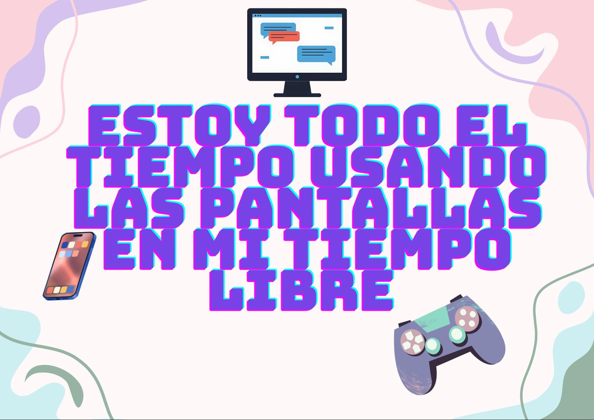
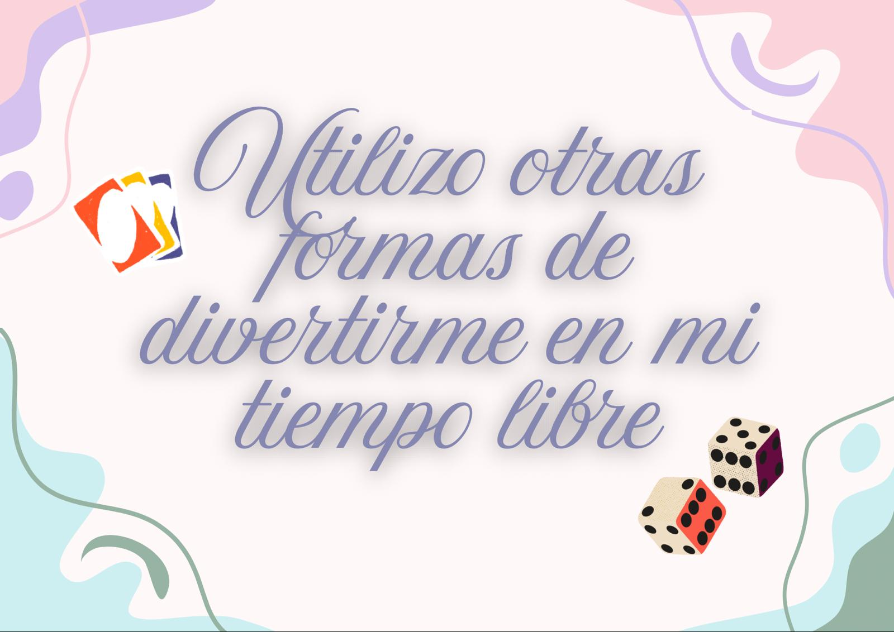
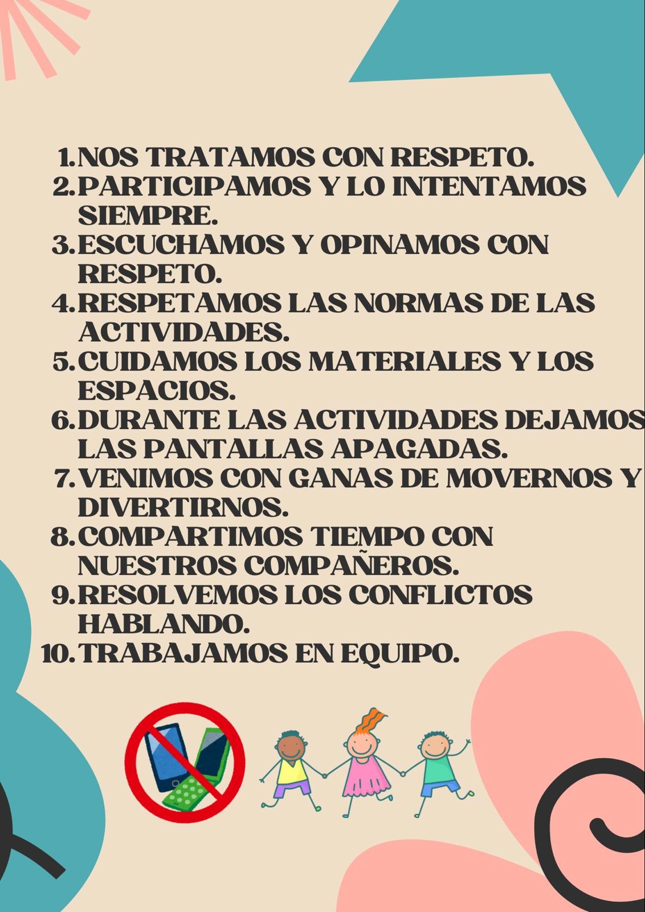
Actividad 2 · Taller de Silbo
Edad: 9-12 años
Duración: 60 min aprox.
Varias sesiones
Salón de actos y patio
El taller de Silbo introduce a los niños y las niñas en una manifestación singular del patrimonio canario. Combina historia, técnica, respiración, identificación de sonidos y juegos prácticos para favorecer escucha, concentración, paciencia y aprendizaje cooperativo.
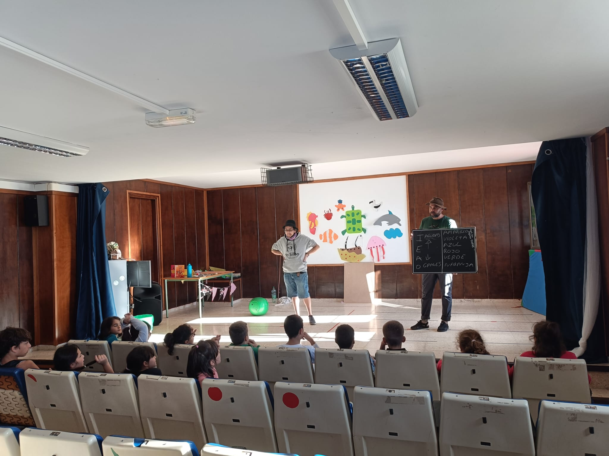
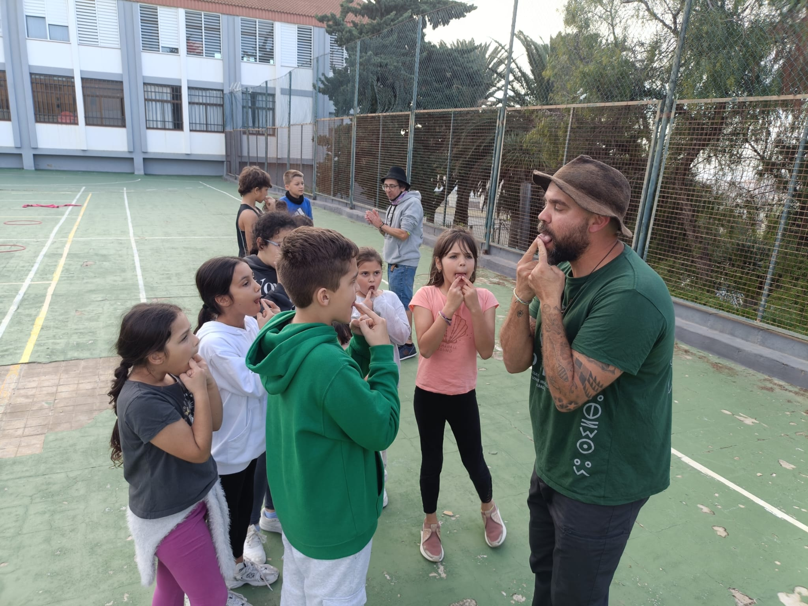
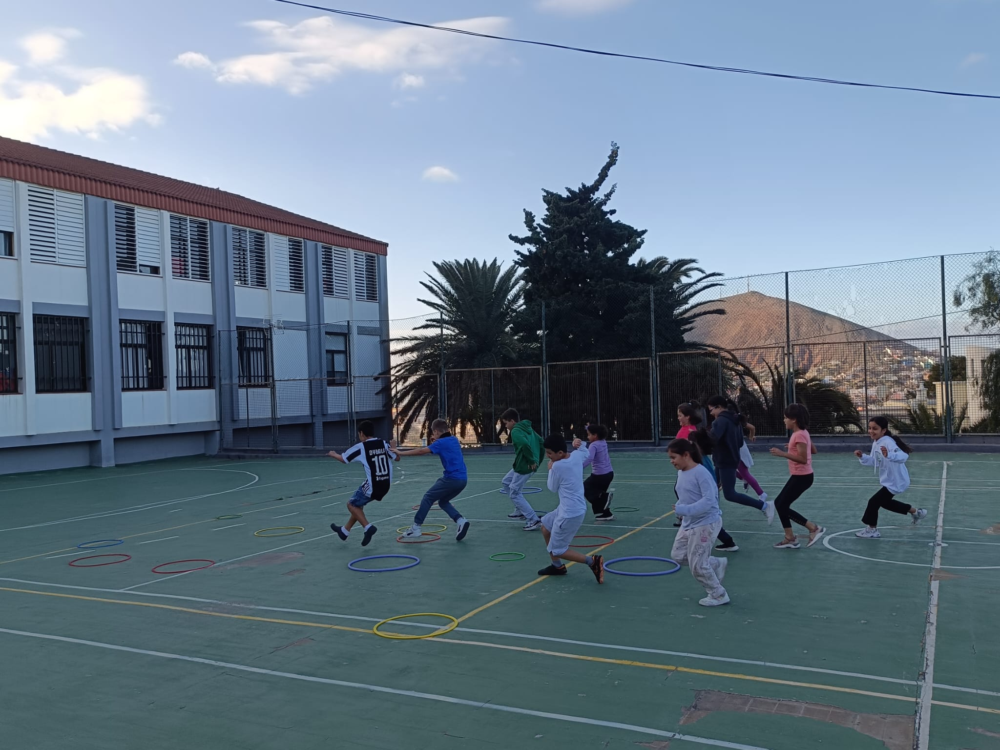
Actividad 3 · Taller de Salto del Pastor
Edad: 9-12 años
Duración: 60 min aprox.
Varias sesiones
Patio y senderos
En esta actividad se trabajan el origen del Salto del Pastor, las partes del garrote, las normas de seguridad y las técnicas básicas de apoyo, equilibrio, brinco y desplazamiento. Se plantea como una experiencia progresiva y adaptada, donde cada niño y cada niña puede avanzar según sus posibilidades.
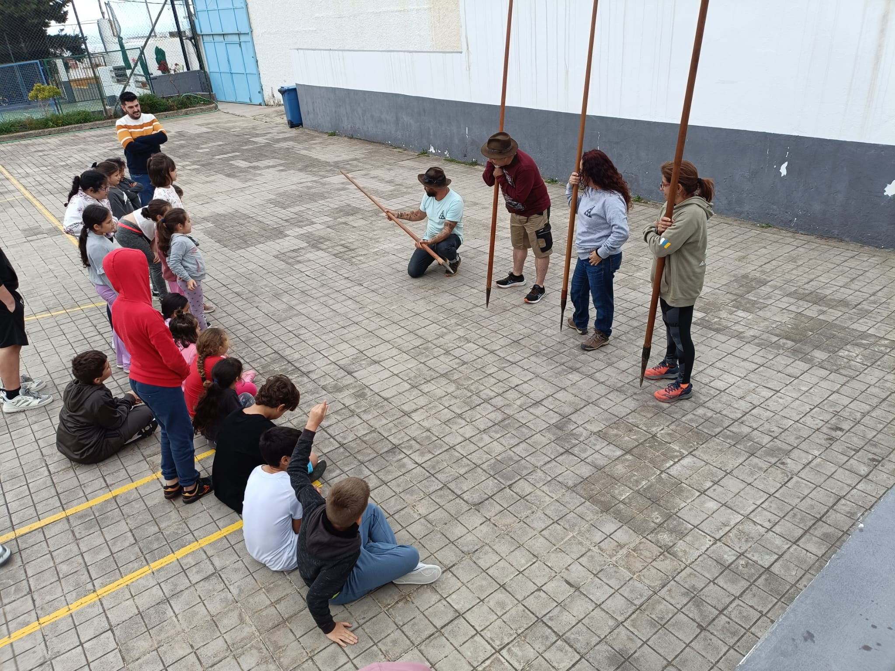
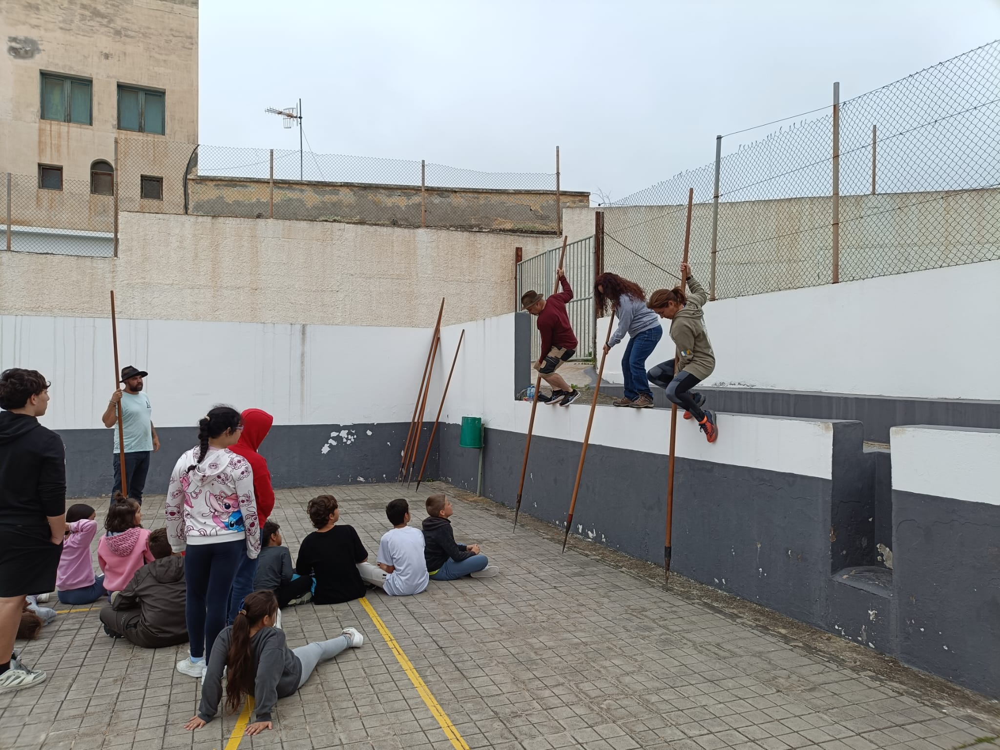
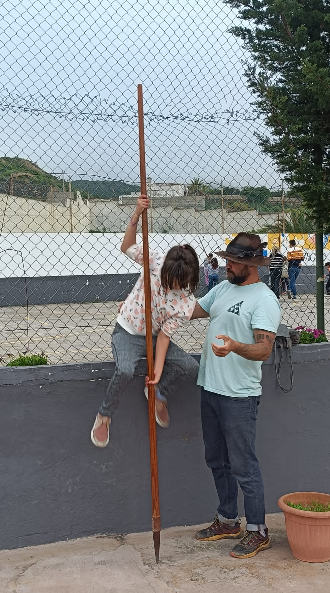
Actividad 4 · Taller de Juego del Palo
Edad: 9-12 años
Duración: 60 min aprox.
Varias sesiones
Patio exterior
El Juego del Palo se presenta como una práctica tradicional que combina coordinación, respeto, atención y confianza. Los niños y las niñas aprenden historia, posición de guardia, desplazamientos y secuencias básicas por parejas, finalizando con una reflexión sobre las emociones vividas y la cooperación.
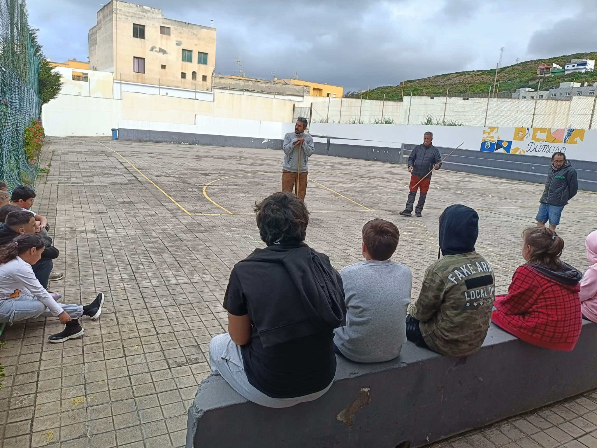
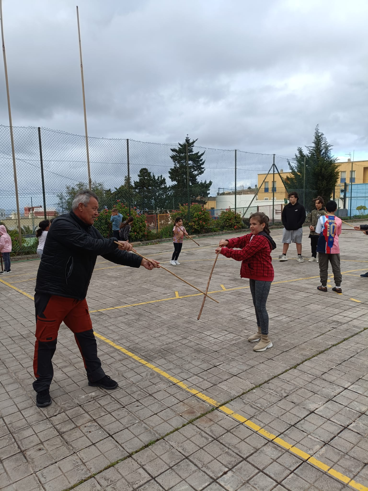
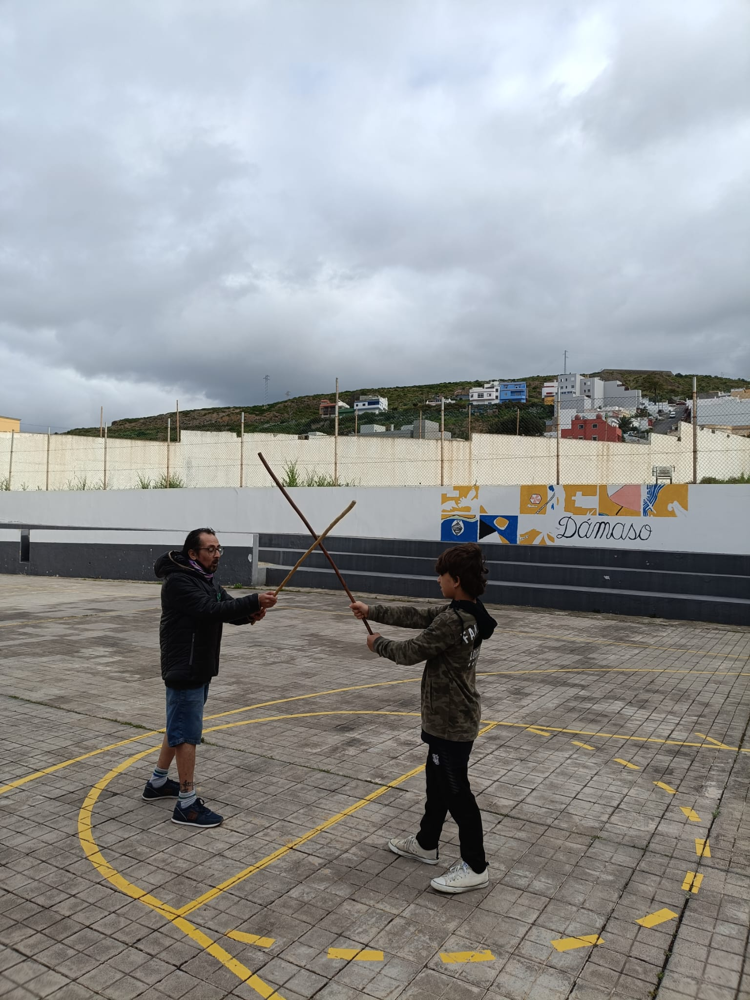
Actividad 5 · Salida a la Presa de Las Garzas
Edad: 9-12 años
Duración: 2 horas aprox.
Entorno natural
Salida final
La salida a la Presa de Las Garzas integra senderismo, educación ambiental, observación de la flora, merienda compartida y actividades en la naturaleza. Es una experiencia de convivencia, movimiento y desconexión digital en un contexto natural cercano y significativo.
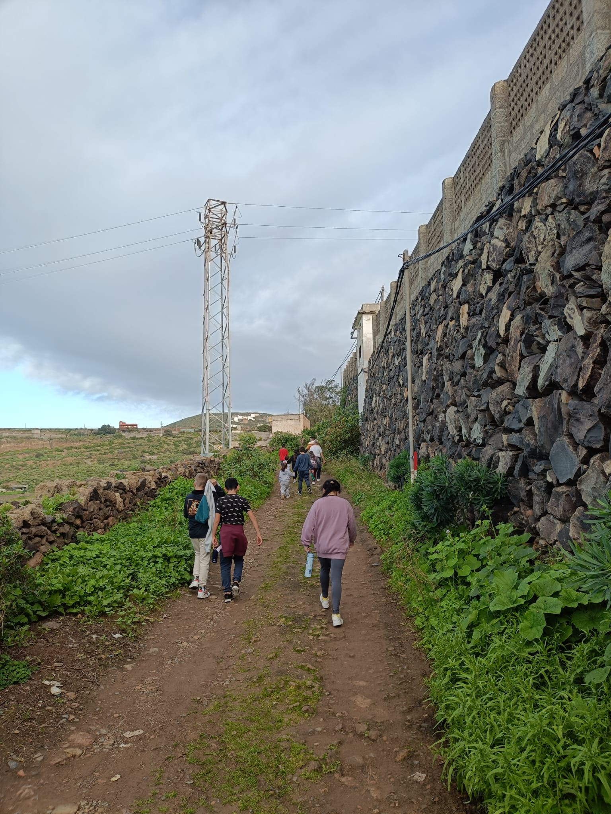
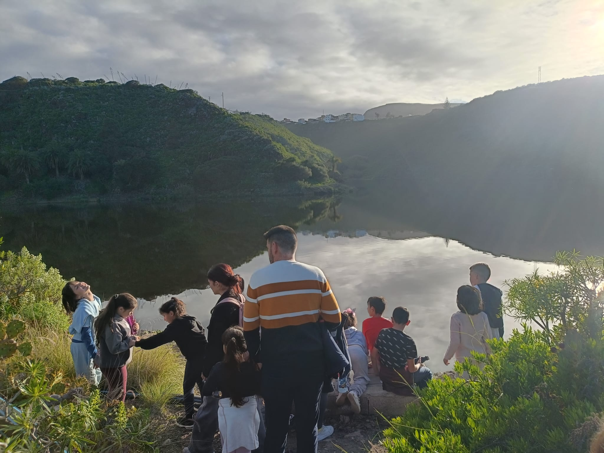
Localización y temporalización
El proyecto se desarrolla principalmente en la Residencia Escolar Santa María de Guía, utilizando espacios interiores y exteriores, y se complementa con la salida al entorno natural de la Presa de Las Garzas.
La duración total del proyecto es de dos meses, con un total de nueve sesiones distribuidas entre las distintas actividades y una sesión de consolidación.
2
meses
9
sesiones
10
participantes
5
actividades clave
Recursos y presupuesto
Recursos humanos
- Integrador o integradora social responsable de la planificación, coordinación y acompañamiento.
- Monitores y monitoras de apoyo para dinamización y supervisión.
- Profesionales colaboradores especialistas en actividades tradicionales canarias.
- Equipo educativo de la residencia para coordinación general y apoyo organizativo.
Recursos materiales
- Material fungible: cartulinas, lápices, gomas, rotuladores, tizas, folios y cinta adhesiva.
- Material no fungible: pizarra, ordenador, aros, garrotes, palos y cronómetro.
Presupuesto
El presupuesto total estimado del proyecto asciende a 1.614 €, incluyendo personal educativo, monitor colaborador, materiales y seguro de actividad.
Evaluación del proyecto
La evaluación se concibe como un proceso continuo, con tres momentos principales: evaluación inicial, evaluación durante el proceso y evaluación final. Se emplean entrevistas, observación directa, diario de campo, carnet de logros, dinámicas de cierre de sesión, cuestionario final y asambleas grupales.
Indicadores de evaluación
- Participación activa de los niños y las niñas en las actividades.
- Disminución del tiempo dedicado al uso de pantallas.
- Mejora de la interacción social.
- Reducción de conflictos y mejora del clima de convivencia.
- Adquisición de habilidades físicas básicas.
- Interés por el patrimonio cultural trabajado.
- Grado de satisfacción con el proyecto.
Análisis de riesgos
Riesgos físicos del personal
Sobreesfuerzos, preparación de materiales y pequeños accidentes en la organización de espacios.
Riesgos psicosociales
Estrés o sobrecarga emocional derivados de la gestión de grupo y de conflictos puntuales.
Riesgos para los niños y las niñas
Caídas, golpes, mal uso del material, riesgos del entorno natural, frustración, timidez o conflictos grupales.
Conclusiones
RE-ACCIÓN demuestra que el ocio activo puede convertirse en una herramienta educativa clave para promover hábitos de vida saludables, mejorar la convivencia y contribuir al bienestar físico, social y emocional de los niños y las niñas.
Galería del proyecto
Actividad 1 · Concienciación
Actividad 2 · Silbo
Actividad 3 · Salto del Pastor
Actividad 4 · Juego del Palo
Actividad 5 · Salida a la Presa de Las Garzas